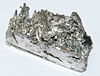

ytterbium

Definition: Ytterbium is a chemical element with the symbol Yb and atomic number 70. It is a metal, the fourteenth and penultimate element in the lanthanide series, which is the basis of the relative stability of its +2 oxidation state. Like the other lanthanides, its most common oxidation state is +3, as in its oxide, halides, and other compounds. In aqueous solution, like compounds of other late lanthanides, soluble ytterbium compounds form complexes with nine water molecules. Because of its closed-shell electron configuration, its density and melting and boiling points differ significantly from those of most other lanthanides.
Source: Wikipedia
Wikipedia Page
Wikidata Page